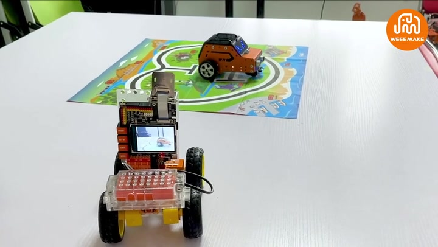
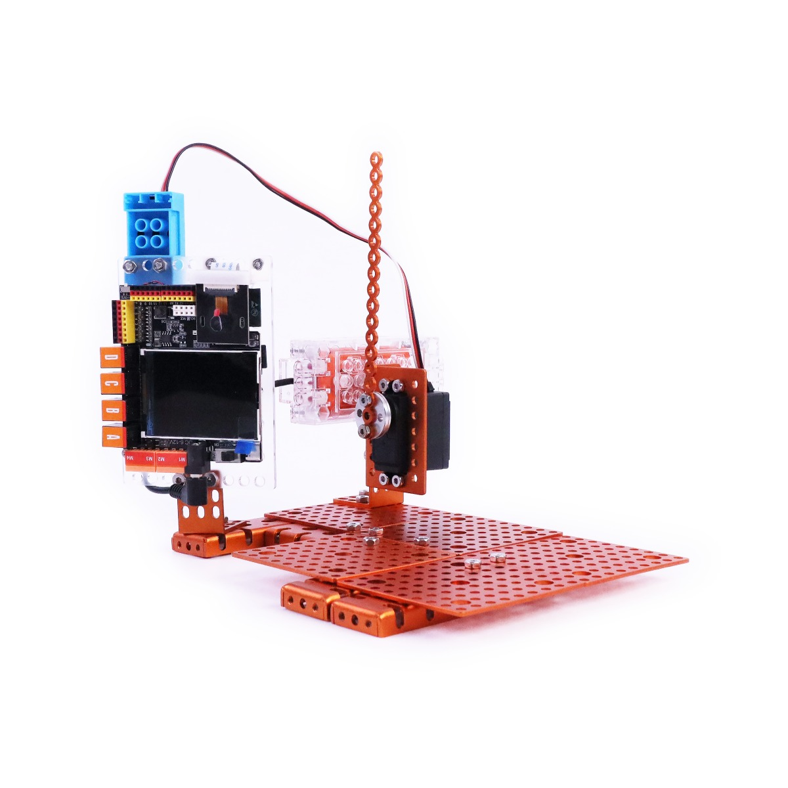
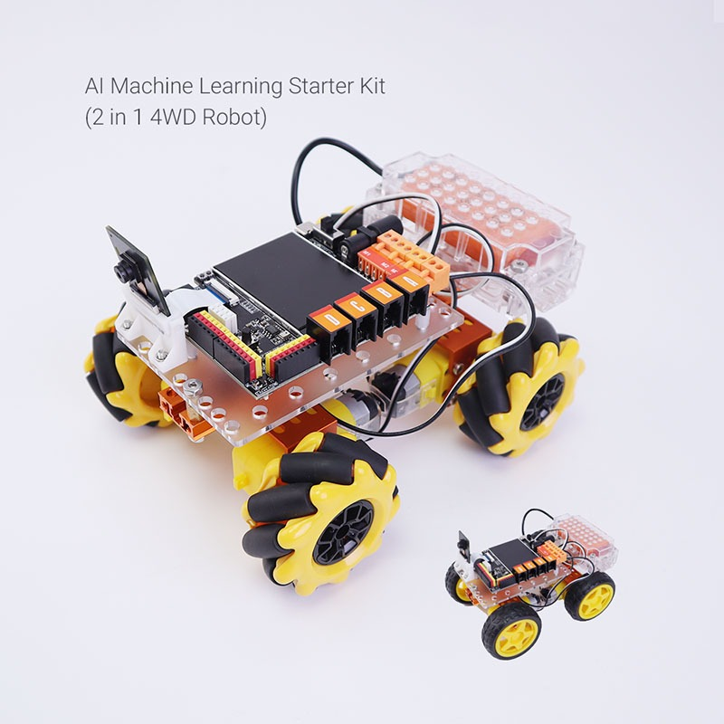
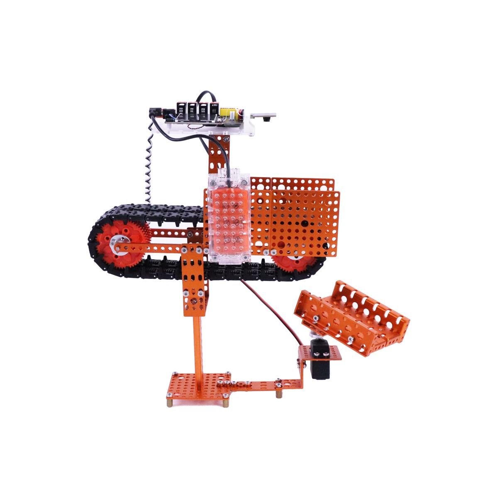
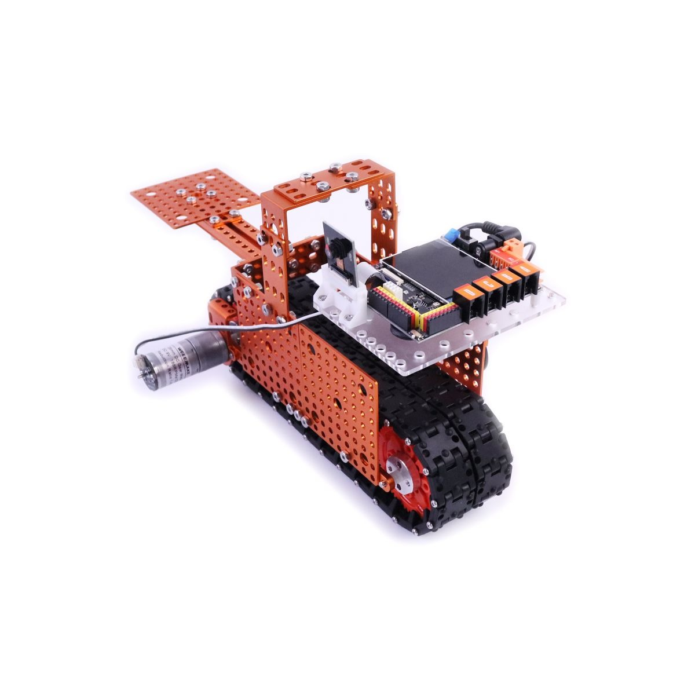

AI Explorer
Khám Phá Trí Tuệ Nhân Tạo
Không bắt đầu bằng những dòng code khó — bắt đầu bằng việc khám phá, thử nghiệm và tạo ra sản phẩm của chính mình.
AI Explorer dành cho học viên 12–18 tuổi, giúp các em bước vào thế giới Trí tuệ nhân tạo & Robotics qua lập trình kéo-thả trực quan trước khi làm quen với MicroPython. Trên board AI chuyên dụng ELF AIoT K210, học viên khám phá cách máy tính nhìn, nhận diện và tương tác với thế giới — từ màu sắc, vật thể, khuôn mặt, giọng nói đến việc kết hợp AI với robot để tạo ra hệ thống biết quan sát và tự điều chỉnh.
🚀 Lập trình kéo-thả → AI Vision → AI Robotics → Machine Learning. Học viên tự thu thập dữ liệu, huấn luyện mô hình AI của riêng mình, rồi hoàn thiện dự án tốt nghiệp và portfolio công nghệ cá nhân.

24 buổi học – 4 Module chinh phục
"Từ giác quan AI đầu tiên đến một bộ não biết tự học — mỗi module là một bước tiến trên hành trình trở thành kỹ sư AI tương lai."
Dạy AI biết nhìn, nhận diện và tương tác với thế giới xung quanh
Học viên làm quen với board AI ELF AIoT K210, camera, màn hình, microphone và các công cụ lập trình AI. Từ những bài thực hành đơn giản, học viên từng bước giúp hệ thống nhìn thấy hình ảnh, nhận biết màu sắc, ký hiệu và vật thể, đồng thời làm quen với khả năng nhận diện giọng nói.
Sau module này, học viên hiểu được cách một thiết bị AI "nhìn" thế giới thông qua camera và bắt đầu xây dựng các ứng dụng AI tương tác đơn giản.

Ghép AI vào robot để robot biết quan sát và tự điều chỉnh chuyển động
Sau khi làm quen với AI Vision, học viên đưa "đôi mắt AI" lên robot. Các em lắp ráp và lập trình robot 4 bánh và robot bánh Mecanum, sau đó kết hợp camera với động cơ để robot có thể phản ứng với những gì camera nhìn thấy.
Sau module này, học viên hiểu cách kết hợp AI, Camera, Robot và Động cơ để biến một robot thông thường thành một robot có khả năng quan sát và phản ứng với môi trường.

Từ sử dụng AI có sẵn đến hiểu cách một AI Model được tạo ra
Ở module này, học viên bắt đầu bước vào thế giới Machine Learning. Thay vì chỉ sử dụng những mô hình AI đã được chuẩn bị sẵn, học viên tìm hiểu quy trình để tạo ra một mô hình AI từ dữ liệu.
Sau module này, học viên hiểu được một AI Model không phải "tự nhiên mà có", mà được xây dựng từ dữ liệu → huấn luyện → kiểm tra → triển khai → cải thiện.

Hiểu điều gì khiến AI có thể "học" và tự cải thiện
Đây là module tổng kết, đưa học viên từ việc sử dụng AI đến việc hiểu những nguyên lý cơ bản phía sau quá trình AI học. Thông qua các ví dụ trực quan và mô phỏng, học viên khám phá cách máy tính sử dụng dữ liệu, trọng số và sai số để từng bước cải thiện kết quả dự đoán.
Học viên tổng hợp các sản phẩm đã thực hiện trong chương trình — AI Vision, AI Robotics, AI Model và Machine Learning — thành một portfolio dự án công nghệ cá nhân, thể hiện quá trình học tập và khả năng xây dựng sản phẩm AI của mình.
Sau module này, học viên không chỉ biết "dùng AI", mà bắt đầu hiểu AI học như thế nào, tại sao AI có thể dự đoán và làm thế nào AI cải thiện kết quả.

Sau 24 buổi học, học viên sẽ:
- 👁️Sử dụng thành thạo các model AI có sẵn để nhận diện vật thể, khuôn mặt, giọng nói và mã QR.
- 🤖Thiết kế robot tự hành có khả năng bám vật thể, bám khuôn mặt và tự dò đường bằng camera AI.
- 🧩Tự thu thập dữ liệu, gán nhãn và huấn luyện một mô hình AI nhận diện vật thể của riêng mình.
- 📤Triển khai (deploy) mô hình AI tự train lên board và kiểm tra hoạt động thực tế.
- 📐Hiểu và giải thích được nguyên lý toán học đằng sau việc AI "học" từ dữ liệu.
- 🚀Hoàn thành dự án tốt nghiệp — mô phỏng một AI tự điều chỉnh để tìm ra đáp án đúng.
- 🎓Portfolio công nghệ cá nhân với 4 dự án AI thực tế, sẵn sàng cho định hướng nghề nghiệp.
Con sẽ đạt được gì sau khóa học?
-
👁️
Làm chủ AI thị giác máy tính
Ứng dụng các model AI có sẵn để nhận diện vật thể, khuôn mặt, màu sắc và giọng nói.
-
🤖
Robot tự hành thông minh
Kết hợp camera AI với robot 4 bánh và Mecanum để tạo chuyển động tự động.
-
🧠
Tự huấn luyện AI của riêng mình
Thu thập dữ liệu, gán nhãn và huấn luyện model qua nền tảng MaixHub.
-
🎓
Hiểu bản chất của Machine Learning
Giải thích được vì sao AI học được, qua dự án tốt nghiệp tự lập trình.